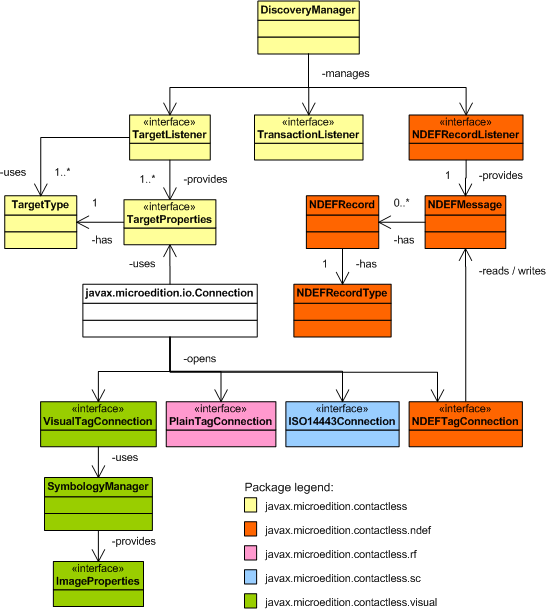

|
|||||||||
| PREV PACKAGE NEXT PACKAGE | FRAMES NO FRAMES | ||||||||
See:
Description
| Interface Summary | |
|---|---|
| TagConnection | This is a marker interface for all RFID tag and smart card related connections in the Contactless Communication API. |
| TargetListener | The TargetListener provides a mechanism for the application to
be notified, when contactless targets are discovered by the device hardware. |
| TargetProperties | This interface collects the properties that are common for all contactless targets supported by this specification. |
| TransactionListener | This interface provides a notification to the application about secure element activity in card emulation mode. |
| Class Summary | |
|---|---|
| DiscoveryManager | The DiscoveryManager class offers the mechanism to discover
targets for contactless communication. |
| TargetType | This class collects the contactless target types supported by the Contactless Communication API. |
| Exception Summary | |
|---|---|
| ContactlessException | This ContactlessException is thrown when an unsupported operation
is attempted. |
Provides functionality common to all contactless targets.
Discovering contactless targets is the starting point of this API. Once a target is discovered, an application can communicate with it. This package contains the contactless target discovery. It provides a mechanism to request notification about targets appearing to the proximity of the device. The following diagram gives an overview to the target discovery and to the whole structure of the Contactless Communication API. It also shows the relationships between different packages in this API.
Applications can use classes and interfaces in this package to discover
contactless targets. By getting an instance of
DiscoveryManager
class, the application can register to receive notifications about contactless
targets appearing into the proximity of the device. Based on the appearing targets,
the application can use a target-specific connection defined in the subpackages
to communicate with the target. The URL needed to open the connection to the
target is provided in the
TargetProperties parameter
in the notification. This target-specific connection can be for example
ISO14443Connection,
when external smart card is available. These target-specific connection objects
contain methods to access and manipulate data on the target.
This API defines the basic connection interfaces to the most common targets. However the API implementation should provide additional and more detailed target-specific connection interfaces to the physical targets it supports.
Connections to different contactless targets are designed on top of Generic Connection Framework (GCF). Each different target type defines a new protocol to the GCF. However only one of these protocols is visible in this specification and the rest are left to the API implementation. The visual tag related protocol is visible and all the RFID related protocols are hidden. The reason to hide the protocols is the nature of RFID communication. It is impossible to know what kind of target appears to the proximity of the device and therefore the URL needed to open a connection to the target is not revealed beforehand to the application developer. Instead the URL is provided to the application in the notification about the discovered target.
An application does not have any means to control the time the target is available in the proximity of the device. It can be several seconds or just a touch to the target. Since the communication with the contactless targets should happen in fraction of a second, applications should take this into consideration in the design phase and try to perform connection related operations accordingly.
The following code example illustrates how the contactless targets can be discovered. The examples later in this specification supplement this example.
import java.io.IOException;
import javax.microedition.contactless.*;
import javax.microedition.contactless.ndef.*;
import javax.microedition.io.Connector;
// Example class of how to discover targets using
// JSR 257 Contactless Communication API
//
public class CCAPIExample implements TargetListener {
private DiscoveryManager dm;
public CCAPIExample() {
registerTargetToDiscovery();
}
public void registerTargetToDiscovery() {
// Check that NDEF_TAG target is supported
TargetType[] targets = DiscoveryManager.getSupportedTargetTypes();
boolean supported = false;
for (int i=0; i<targets.length; i++) {
if (targets[i].equals(TargetType.NDEF_TAG)) {
supported = true;
}
}
if (supported) {
// Get DiscoveryManager instance and
// set TargetListener for NDEF_TAG target
dm = DiscoveryManager.getInstance();
try {
dm.addTargetListener(this, TargetType.NDEF_TAG);
}
catch (ContactlessException ce) {
// handle exception
}
}
}
public void targetDetected(TargetProperties[] prop) {
// handle notification
}
}
|
|||||||||
| PREV PACKAGE NEXT PACKAGE | FRAMES NO FRAMES | ||||||||